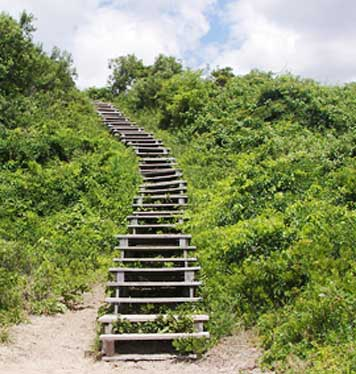

The Places You'll Go!
Fort Tilden Beach
|  |
Cost: Free
|
|
Fort Tilden, also known as Fort Tilden Historic District, is a former United States Army installation in the New York City borough of Queens and part of Gateway National Recreation Area. It is located on the Rockaway Peninsula between Jacob Riis Park to the east and Breezy Point to the west. All three sites are operated by the National Park Service.[2] Fort Tilden today is largely a natural area of beach, dunes and maritime forest. Most of the old military installations are abandoned, though some buildings have been renovated and are used by local arts groups. Atop one of the old batteries, Battery Harris East, is a viewing platform offering 360-degree views that encompass the city, New York Harbor and the Atlantic Ocean. The area is popular with bird-watchers and other nature-lovers and is widely used for fishing |